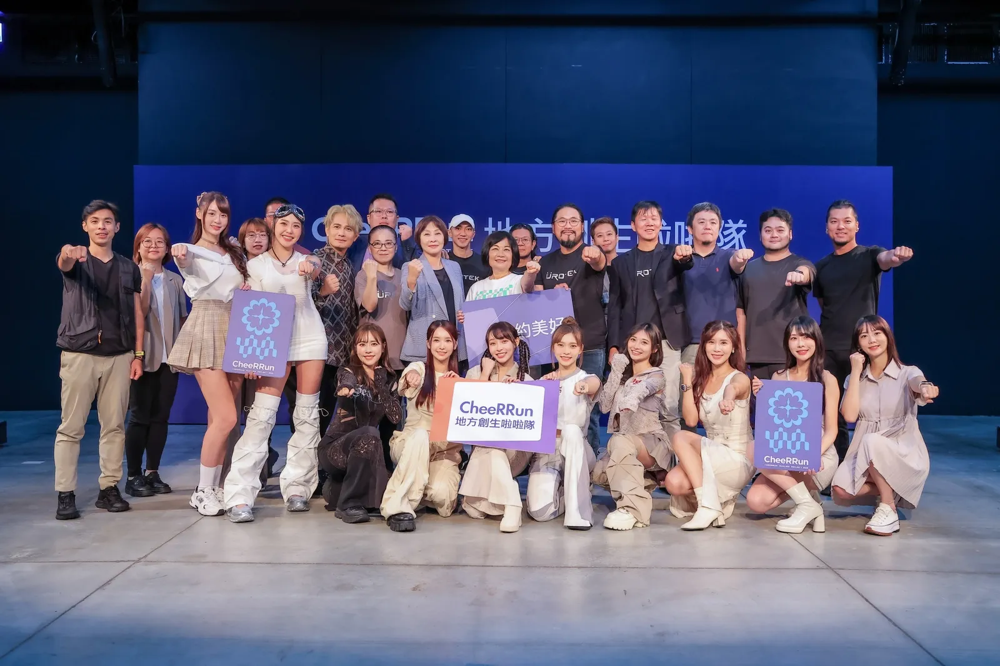

網紅行銷

CheeRRun 地方創生啦啦隊 —— 花蓮振興應援計畫
標籤：#網紅行銷 #地方創生 #跨界聯名 #CheeRRun #社會責任
【挑戰：將「同情」轉化為實質的「行動力」】
2024 年 0403 強震後，花蓮觀光產業面臨史無前例的衝擊。當時的挑戰在於：大眾雖然關心，但卻缺乏踏上花蓮的實質誘因。Scope PR 受命在短時間內規劃一場不僅是「公益」，更能產生「經濟轉換」的活動，將目光焦點重新帶回花蓮的美好。
【策略：創意應援，重新定義地方行銷】
Scope PR 擺脫傳統的觀光廣告，改採「IP 化」與「粉絲經濟」策略：
- 全明星陣容媒合：集結全台最具影響力的啦啦隊女神（如李多慧、安芝儇等跨隊組合），建立「應援啦啦隊」IP，將粉絲的關注力直接導入花蓮。
- 跨界品牌資源整合：串聯運動品牌、在地旅宿與餐飲業，打造一場結合「應援、路跑、旅遊」的複合式體驗。
- 社群議題極大化：透過 KOL 的第一視角 Vlog、社群挑戰賽以及高頻率的媒體報導，創造出「去花蓮，就是最酷的應援」的社會氛圍。
【結果：用影響力翻轉地方經濟】
- • 數位聲量雙贏：獲得各大主流媒體主動報導，相關社群話題瀏覽量突破預期。
- • 產業效益：有效帶動花蓮週末旅宿住房率提升，成功為在地店家注入活水。
- • 品牌價值：成功在災後重建期為花蓮創造正面、活力的品牌意象，驗證了 Scope PR 操盤「粉絲經濟」的實力。